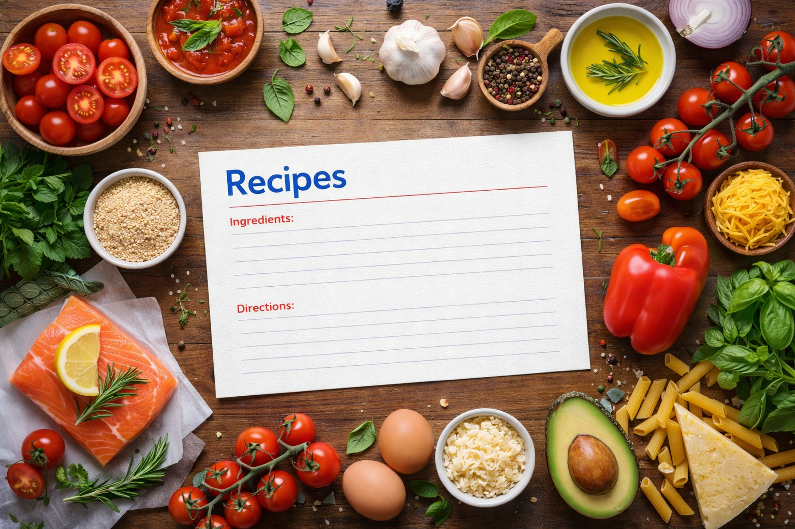

Simple and nutritious meals to fuel your goals

A high-protein bowl perfect for post-workout recovery.
6 oz grilled chicken breast, 1 cup mixed veggies (bell pepper, zucchini, broccoli), 1/2 cup brown rice, 1 tbsp olive oil, salt, pepper, garlic powder.
1. Season chicken with salt, pepper, and garlic powder. Grill for 6-7 min per side. 2. Sauté veggies in olive oil for 5 minutes. 3. Serve over cooked brown rice.

A quick and healthy breakfast to start your day right.
2 slices whole grain bread, 1 ripe avocado, 2 eggs, lemon juice, red pepper flakes, salt and pepper.
1. Toast bread. 2. Mash avocado with lemon juice, salt, and pepper. 3. Fry or poach eggs to your liking. 4. Spread avocado on toast and top with eggs and red pepper flakes.

Creamy yogurt layered with berries and granola.
1 cup plain Greek yogurt, 1/3 cup granola, 1/2 cup mixed berries (strawberries, blueberries), 1 tsp honey.
1. Add yogurt to a bowl or glass. 2. Layer with granola and berries. 3. Drizzle with honey. Serve immediately.
Omega-3 rich salmon served over fluffy quinoa with greens.
5 oz salmon fillet, 3/4 cup cooked quinoa, 1 cup spinach, 1 lemon, 1 tbsp olive oil, salt, dill.
1. Season salmon with salt, dill, and lemon juice. Bake at 400°F for 12-15 min. 2. Cook quinoa per package. 3. Serve salmon over quinoa with fresh spinach and a lemon wedge.